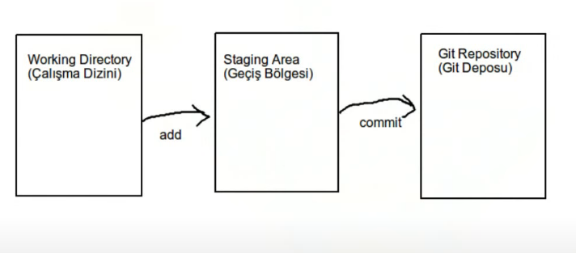
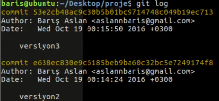

Git Version Controll System
git config —global user.name "Zaur Sharifov" ⇒ ismini verme
git config —global user.email "mail@outlook.com" ⇒mail verme
git config —global user.name ⇒ sorgulama
git config —global user.email ⇒ sorgulama
cd ⇒ change directory konum degistirme
ls ⇒ mevcut konumdaki dosyalari gosterme
git init ⇒ mevcut konuma .git dosyasi ekler
git add . ⇒ dosyalari git base gitmeden onceki konumda bekletir tek basina ise yaramaz

git commit -m "v0.0.1 table eklendi" ⇒ git base eklenir "" icinde yazmak istedigini yazabilirsin
git log ⇒ base yuklenen dosyalari ve yazilari gosterir
git status ⇒ projede degisiklik varsa onlari gosterir
git add style.css ⇒ yazdigin dosyayi base yoluna ekler "." ile yazidiginda tum dosyalari ekler
git diff ⇒ dosya icinde komut satirlarindaki degisiklikleri gosterir
git diff -staged ⇒ git add . yapildiginda (staging area - gecis bolgesinde) olan degisiklikleri gosterir
git rm product.html ⇒ product.html dosyasini remove yani silme islemi yapar
git rm -r silinecekler/ ⇒ silinecekler klasorunu ve icindekileri siler
git mv index.css indexstyle.css ⇒ index.css dosyasinin adini indexstyle.css yapar
git mv index.html dosyalar/ ⇒ index.html dosyasini dosyalar klasorune tasir
git checkout — index.html ⇒ index.html dosyasinda yapilan degisikligi geri getirme
Git Dersleri - 13 - Değişikliği Geri Alma (Geçiş Bölgesi) ⇒ tekrar izle
git checkout 50c6d0ff51602a5d9f3618c9c916b5a1ecd251b4 — .
⇒ git log dedikde versiyonlar gelir ve kecmek istediyin versiyonun ustteki random sifreni alib bele yazirig sondaki
"." onemlidi noqte qoyulduqda butun dosyalari versiyona gore deyisir sadece index.html dosyasini yazarag onun
versiyonun deyismek olur.

git remote add Zaur Sharifov https://github.com/ZaurSharifov/basic-blog-template
githubdan yuklediyin dosyada deyisiklik edib eyni repoya gonderende user.name ve hemin repo
linkini vererek remote fonk isledirsenki tekrardan birlessin
[https://ubuntu-tr.github.io/github-rehberi](https://ubuntu-tr.github.io/github-rehberi)
[https://medium.com/@noteCe/5-github-görev-yönetimi-i̇ssues-ve-organizasyon-1277ef74b409](https://medium.com/@noteCe/5-github-g%C3%B6rev-y%C3%B6netimi-i%CC%87ssues-ve-organizasyon-1277ef74b409)
[https://dev.to/arnabdeypolimi/some-useful-resources-for-github-readme-122c](https://dev.to/arnabdeypolimi/some-useful-resources-for-github-readme-122c)